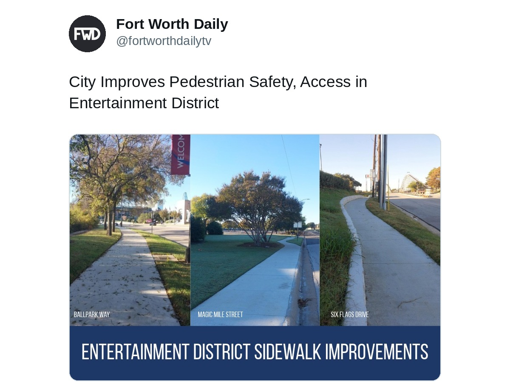
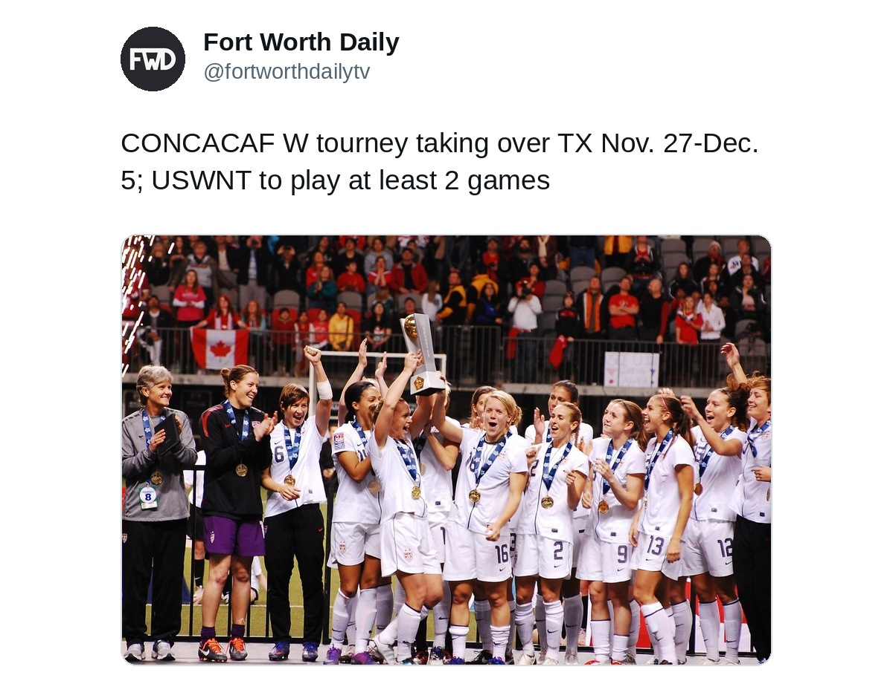
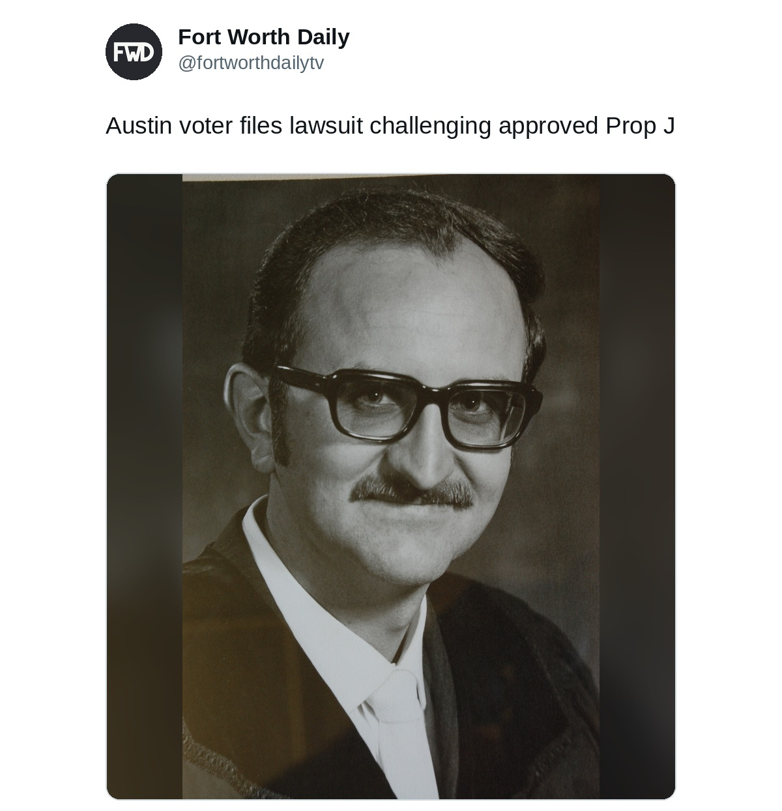

Key project improvements include new concrete sidewalks and paving tie‑ins throughout the Entertainment District to close sidewalk gaps and improve ADA‑compliant pedestrian access to various locations in the district.

👍 ❤️ 😮 ✅ written to disk (dry run)
story + scoring
{
"source": "City of Arlington",
"kind": "rss",
"score": 0.5832,
"relevance": 0,
"url": "https://www.arlingtontx.gov/News-Articles/2026/November/City-Improves-Pedestrian-Safety-Access-in-Entertainment-District",
"image_license": "official",
"image_credit": "Photo: City of Arlington"
}Texas Health Mansfield Stadium has been gifted the actual goals used during World Cup matches at Dallas Stadium in Arlington, giving the city a unique piece of soccer history.

👍 ❤️ 😮 ✅ written to disk (dry run)
story + scoring
{
"source": "NBC 5 DFW",
"kind": "rss",
"score": 0.3609,
"relevance": 2,
"url": "https://www.nbcdfw.com/news/sports/concacaf-w-tournament-taking-over-texas-nov-27-dec-5-uswnt-will-play-at-least-two-games/4108241/",
"image_license": "openverse-cc",
"image_credit": "Photo: rachael.c.king (CC BY 2.0) via Flickr"
}An Austin voter has filed an election contest seeking to overturn Proposition J.

👍 ❤️ 😮 ✅ written to disk (dry run)
story + scoring
{
"source": "KXAN Austin",
"kind": "rss",
"score": 0.1408,
"relevance": 2,
"url": "https://www.kxan.com/news/local/austin/austin-prop-j-contested-lawsuit/",
"image_license": "openverse-cc",
"image_credit": "Photo: H van Niekerk (CC BY-SA 4.0) via Wikimedia"
}